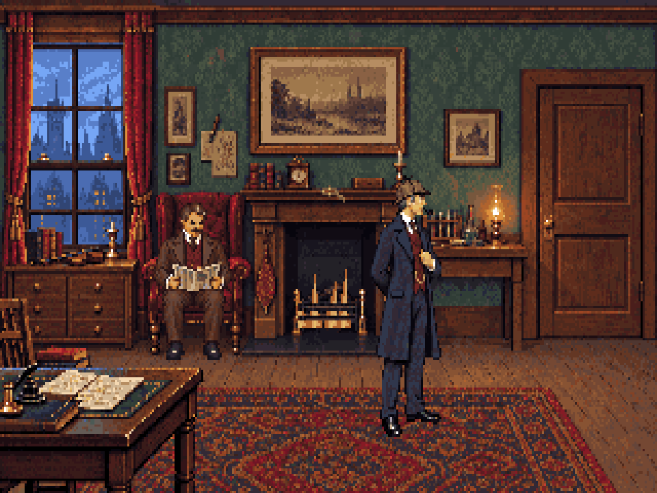

Frontal camera, horizon 0, full size at y176. Watson now sits front-on and farther back in the cushion. The door is rendered from a solid Blender leaf with frame occlusion. The richer room texture is retained.

Holmes at full size, feet [200,176]. Watson sits squarely front-on, seven pixels higher, with hips back on the cushion.
Room exports: 320×200, shared 64 colours. Displayed at 960×720 (the game's 1.2 pixel aspect). The horizontal scale test deliberately slides a standing pose to isolate size; it is not a walk-cycle preview. Studies are not registered in the game.Study notes and rebuild steps · Locked camera · Measured prop fit · Room placements and hotspots · Blender master · Seated joint guide · Animated solid Blender door · Isolated asset manifest
Watson’s page-turn loop uses the fixed seated master. Key registration, motion mask and timing are included for implementation.